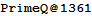
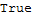

1361
baike
wiki
辛丑年
朱元璋占领池州、江州、泗州，西征陈友谅，被小明王韩林儿封为吴国公。
出生
查理三世（法语：Charles III le Noble；西班牙语：Carlos III el Noble；1361年出生于芒特，1425年9月8日逝世于欧里特），被尊称为“高贵的”，是纳瓦拉国王，他的统治时期是从1387年到1425年。
朱橚su[朱元璋五儿子]
死亡
维特里：法国作曲家、音乐理论家、诗人1291年10月31日生于巴黎，1361年6月9日卒于同地。

